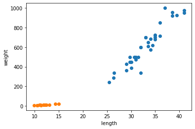

메인으로
Ch 1. 나의 첫 머신러닝
1-1 인공지능과 머신러닝 딥러닝
머신러닝이란
머신러닝은 규칙을 일일이 프로그래밍하지 않아도 자동으로 데이터에서 규칙을 학습하는 알고리즘을 연구하는 분야
사이킷 럿 Scikit-learn은 컴퓨터 과학분야의 대표적인 머신러닝 라이브러리로 검증되고 안정된 머신러닝 알고리즘을 포함하고 있습니다. 머신러닝 알고리즘을 활용하여 어떤 서비스를 만들고 싶다면 사용하기 용이합니다.
딥러닝이란
딥러닝은 머신러닝 알고리즘 중에 인공 신경망(artificial neural network)을 기반으로 한 방법들을 통칭합니다.
텐서플로TensorFlow는 구글이 2015년 공개 파이토치PyTorch는 페이스북이 2018년에 공개한 오픈소스 딥러닝 라이브러리입니다. 두 라이브러리는 인공 신경망을 전문으로 다루며 사용하기 쉬운 파이썬 API를 제공합니다.
1-2 코랩Colab과 주피터 노트북Jupyter Notebook
코랩Colaboratory은 구글에서 제공하는 클라우드 기반 파이썬 실행환경입니다. 주요한 특징으로는 셀Cell 구조 편집환경으로 내가 진행중인 프로젝트의 설명, 코드, 실행결과를 한 문서에서 모두 볼 수 있는 사용자 인터페이스를 제공합니다. 코랩에서는 문서를 파일단위로 관리하고 코랩 노트북, 짧게 노트북이라고 부릅니다. 노트북 내에서 설명을 작성하는 셀은 텍스트셀, 코드를 작성하는 부분을 코드셀이라고 부르며 실행결과는 코드셀을 실행시키면 코드셀 바로 밑에 자동으로 생성됩니다. 코랩과 비슷한 프로그래밍 환경으로 주피터 노트북이 있으며 코랩과 달리 PC에 설치하여 인터넷 연결 없이 사용가능한 것이 특징입니다.
1-3마켓과 머신러닝
시장에서 활용 가능한 생선 분류 프로그램을 만든다고 생각했을때 k-최근접k-Nearest Neighbors 이웃 머신러닝 알고리즘을 사용하여 2개 종류 생선 도미와 빙어를 분류하는 머신러닝 모델을 훈련해보자
데이터셋 원본: http://www.kaggle.com/aungpyaeap/fish-market
생선 길이&무게 데이터셋 예제: 도미 http://bit.ly/bream_list, 빙어 http://bit.ly/smelt_list
생선을 분류하는 것처럼 하나의 절대적 기준으로 판별이 불가능한 경우 머신러닝을 활용하면 비교적 쉽게 해결 될 수 있다.
생선분류를 위해 생선의 길이와 무게를 데이터셋으로 사용한다. 이러한 데이터 특징을 특성feature라고 한다.
이러한 데이터셋을 숫자로 그냥 놓고 보는 것 보다 x, y축으로 표현된 산점도scatter plot을 이용해 직관적으로 볼 수 있다.
생선데이터로 산점도 그래프를 그려보면 길이가 길어질수록 무게도 함께 증가하여 산점도 그래프가 선형linear적이라고 할 수 있다.
